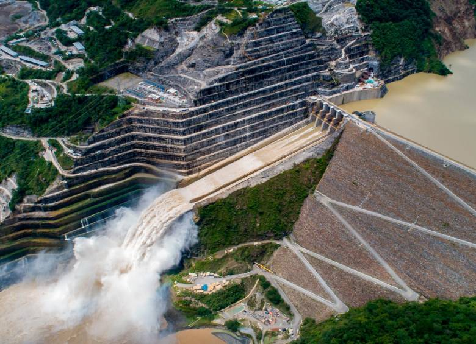
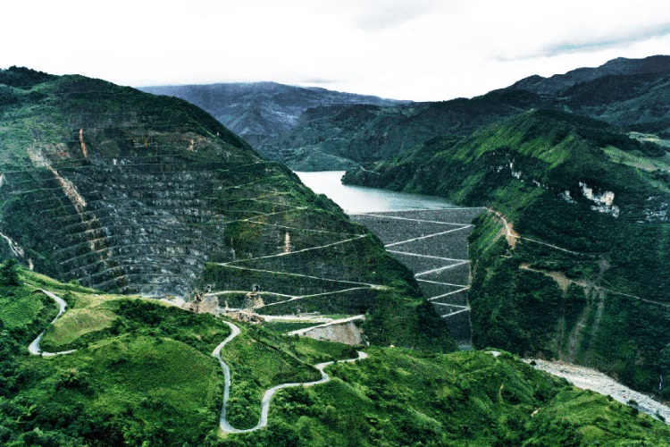
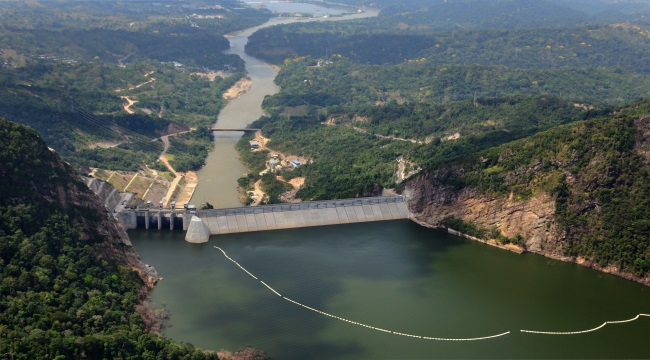
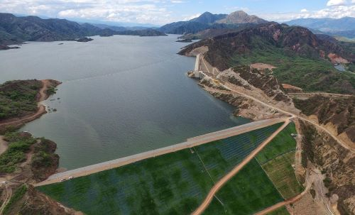
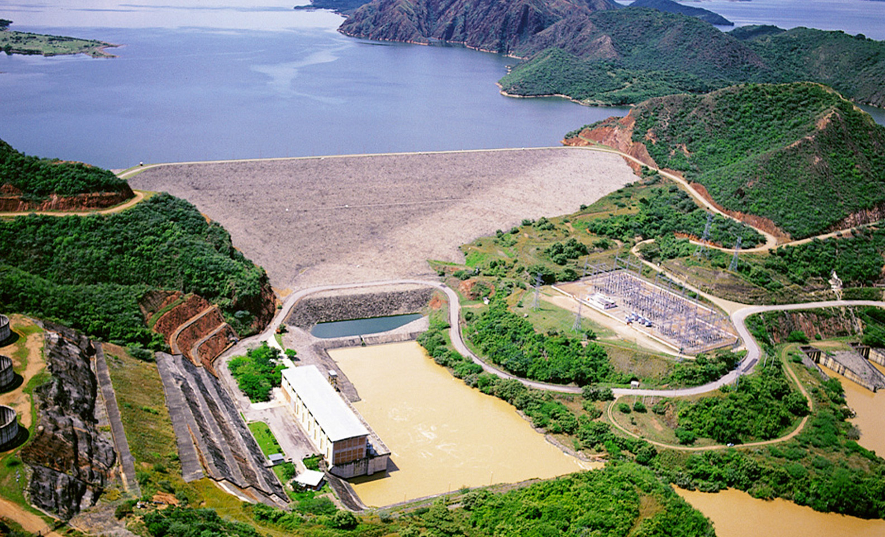

CONOCE MÁS SOBRE LOS PROYECTOS HIDROELÉCTRICOS DE COLOMBIA
Proyectos destacados
Hidroituango

Capacidad instalada: 2,400 MW (megavatios).
Ubicación: Río Cauca, entre Ituango y Briceño, Antioquia.
Inicio de construcción: 2010.
Características principales: Es el mayor proyecto hidroeléctrico en la historia de Colombia,
con una presa de 220 metros de altura y un embalse de 70 km de longitud.
Proveerá cerca del 17% de la energía consumida en el país.
El Guavio

Capacidad instalada: 1,260 MW.
Ubicación: Cundinamarca.
Inicio de operación: 1992.
Características principales: Es una de las mayores plantas hidroeléctricas en el país,
con un embalse capaz de abastecer el sistema interconectado nacional y responder a picos de demanda.
San Carlos

Capacidad instalada: 1,240 MW.
Ubicación: Antioquia.
Inicio de operación: 1984.
Características principales:Una de las plantas más antiguas y eficientes,
contribuye significativamente al suministro de energía renovable en el país.
El Quimbo

Capacidad instalada: 396 MW.
Ubicación: Río Magdalena, Huila.
Inicio de operación: 2015.
Características principales:Su construcción implicó un plan de manejo ambiental y social extenso,
incluyendo restauración ecológica y reasentamiento de comunidades locales
Betania

Capacidad instalada: 540 MW.
Ubicación: Huila, aguas abajo del Quimbo.
Inicio de operación: 1987.
Características principales:Complementa la capacidad de generación de El Quimbo,
generando conjuntamente cerca del 6% de la energía consumida en el país.
Últimas Noticias
Colombia avanza en energías renovables
La apuesta del país por la sostenibilidad continúa con nuevos proyectos hidroeléctricos.